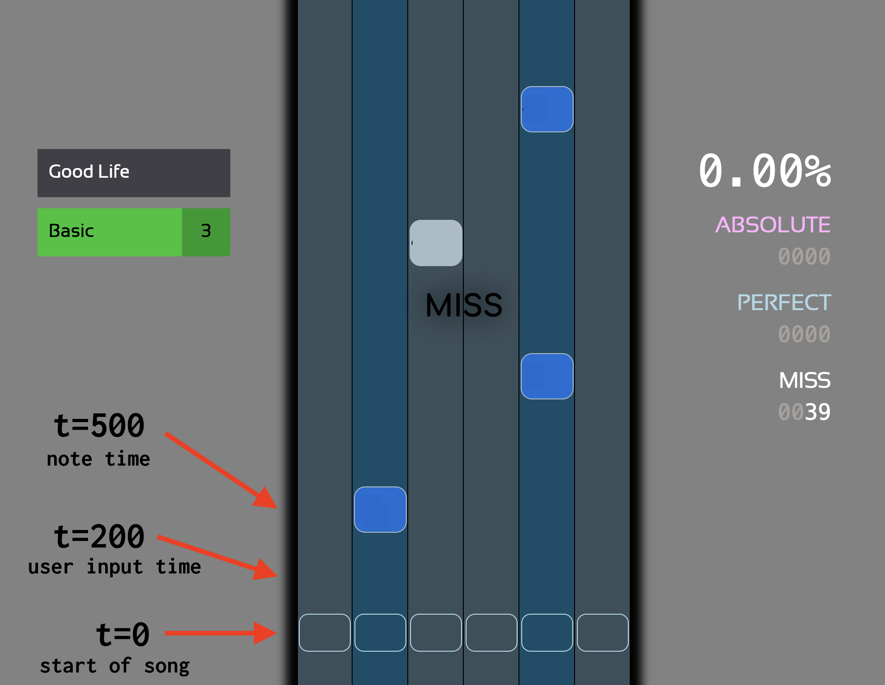

In this article, I will demonstrate how to build a simple rhythm game engine for the web, similar to something like Stepmania, Osu!, etc.
The goal of this article is the core engine - this means the module to track user input and calculate if a note was hit, how accurately, etc. You could build any kind of user interface on top of this engine - a traditional lane based game, or something more like Osu! or Jubeat.
Grab the full source code here.
Over the years, there have been many different rhythm game engines; most closed source, but others open. The one I'm most familiar with is Stepmania, which is time based. Other engines, such as older DDR games, are frame based (or as I understand it, based on my research). Most modern rhythm game engines will be time based. This is in constrast to many other game engines, which are predominantly frame based. In fighting games, the primary currency is frames - in rhythm games, it is time.
In general, time based engines make a lot more sense for a rhythm game, where the core concept is how accurately a player hits a note, which is usually measured in milliseconds.
The primary tenet of a rhythm game engine is to keep track of the current song's playback progress, and the notes and user inputs, relative to the playback progress. At any given time, we need to know:
The start of the song is time zero, or t=0ms. All the calculations (timing windows, player inputs) are relative to the song playback. This way, the timing is decoupled from the rendering engine (and by extension, frame rate).
Let's say 250ms has elapsed. We receive a player input. There are two notes - one at 200ms and one at 280ms. The engine needs to determine which note the player was trying to hit (the note at 280ms), and how accurate they were (30ms early, in this case).
This diagram illustrates the three timings the engine should track and perform comparisons on:

We are targeting the web. Let's look at the tools at our disposal. The main Web APIs we will use are:
performance.now(), which returns a DOMHighResTimeStamp. This is accurate to at least millisecond precision, which is appropriate for a rhythm game.Event.timeStamp. This is the millisecond at which an event was created. Like performance.now(), it returns a DOMHighResTimeStamp.It's worth noting that both these methods have their precision reduced to prevent fingerprinting in Firefox. I'd generally recommend Chrome for your rhythm game development; you might want to distribute a desktop binary using Electron, too, so Chrome(ium) is a good platform.
The value of a DOMHighResTimeStamp is based on how much time has passed since the document's created. More info here. Basically, if you open a new page and run performance.now() in the console after about 1 second, you'll see something like 1003.30000001192 - the value is in milliseconds.
In general, I like to normalize everything to milliseconds.
The final API that we need is AudioContext.getOutputTimestamp(). AudioContext is how I will manage playback. It returns a AudioTimestamp which has two timestamps: contextTime and performanceTime. I will use performanceTime - it also returns a DOMHighResTimeStamp, with the same units and origin as performance.now().
We will also learn a little more about the Web Audio API as we go. Let's get started!
There are (quite) a few ways to play audio on the web. The one I've found to be the best fit for rhythm games is AudioContext, mainly because we can get high precision information about playback progress using getOutputTimestamp().
This is a simple function that fetches an audio file, and returns a function that will start the playback when called.
Fetching and playing audio using AudioContext is a bit involved. The Web Audio API is very powerful - we only use it in a simplistic way here:
ArrayBuffer.AudioContext.decodeAudioData().We then need to create a GainNode and connect it to our AudioContext. Finally, we create a AudioBufferSourceNode, connect the GainNode and call AudioBufferSourceNode.start().
/**
* @param {string} url
* @returns {Promise<() => { audioContext: AudioContext, startTime?: number }>}
*/
async function fetchAudio(url) {
const audioContext = new window.AudioContext();
const res = await window.fetch(url);
const buf = await res.arrayBuffer();
const buffer = await audioContext.decodeAudioData(buf);
const gainNode = audioContext.createGain();
gainNode.gain.value = 1.0;
gainNode.connect(audioContext.destination);
return () => {
const source = audioContext.createBufferSource();
source.buffer = buffer;
source.connect(gainNode);
source.start(0);
const startTime = audioContext.getOutputTimestamp().performanceTime;
return { audioContext, startTime };
};
}
It would be a bit of work, but you could extend this system to support key sounding, which is where each note has a sound associated with it, that is played when (well, if) you hit the corresponding note. This style of gameplay is featured in Beatmania IIDX, Drummania, Guitar Hero, and some other titles, but outside the scope of this tutorial.
Let's test out the code so far:
Music to my ears.
Now that we have a song playing, we need a note chart. There are lots of formats for note charts - Stepmania uses a system where the metadata is at the top, and the time the note should be hit is derived from the metadata. A simple example:
#TITLE: SONG NAME
#OFFSET: 100
#BPMS: 0=236
#NOTES:
0100
0010
0100
0010
,
0000
0000
0000
0000
The song runs at 236 BPM. The notes are offset by 100ms. Since there are four lines in the first measure, each line of notes is spaced a 4th beat apart. 60 / 236 = 0.254. Crunching the numbers, we get something like:
[
{
id: 1,
lane: 1,
ms: 100 // (0ms + 100ms offset)
},
{
id: 2,
lane: 2,
ms: 354 // (254ms + 100ms offset)
},
{
id: 3,
lane: 1,
ms: 608
},
{
id: 4,
lane: 2,
ms: 862
},
]
This can get very complex very quickly, depending on what an engine requires. For the purpose of this article, I'm going to assume a constant BPM (the test song runs at 135 BPM) and we are just going to support 4th notes.
This function creates a simple chart that is similar to the one above. It also creates a <div class="note"> for each note, which will be useful later on. Finally, this demo application only has one lane. The timing property is for later on - it's used for capturing the time the player hit the note.
/**
* A simple "chart"
* 4th note at 135 bpm
* 60/135 = 0.444...
* A note every 0.444ms
*
* @returns {Array<{ el: HTMLDivElement, ms: number, timing?: number }>}
*/
function createChart() {
const offsetMs = 60;
const _4th = 60 / 135;
const notes = [];
const $gameplay = document.querySelector("#gameplay");
for (let i = 1; i < 16; i++) {
const el = document.createElement("div");
el.className = "note";
$gameplay.appendChild(el);
notes.push({ ms: i * _4th * 1000 + offsetMs, el });
}
return notes;
}
The offsetMs of 60 is just something I figured out by feel. A more production-like solution would be to use a tool like Audacity to analyze the waveform for more specific, accurate offset, or even allow the player to adjust it based on their preference.
The data structure createChart() returns looks like this:
[
{
"ms": 504.4444444444444,
"timing": undefined,
"el": {}
},
{
"ms": 948.8888888888888,
"timing": undefined,
"el": {}
},
{
"ms": 1393.3333333333333,
"timing": undefined,
"el": {}
},
// ... etc ...
]
Now we have a song and a note chart, we are ready to get some notes moving! Let's see some code, then talk about it. I'm stubbing out InputManager for now - this is how we will handle player input, which will be the final part of the system.
class InputManager {
process (chart) { /* TODO */ }
clear () { /* TODO */ }
}
/**
* @param {Array<{ el: HTMLDivElement; ms: number, timing?: number }>} chart
* @param {AudioContext} audioContext
* @param {number} startTime
* @param {InputManager} inputManager
*/
function gameLoop(chart, audioContext, startTime, inputManager) {
// Amount of time that has passed since song started playing
const elapsed = audioContext.getOutputTimestamp().performanceTime - startTime;
// Process input
inputManager.process(chart);
// Calculate new position based on playback
for (const note of chart) {
note.el.style.top = `${note.ms - elapsed}px`;
}
// Clear input
inputManager.clear();
requestAnimationFrame(() =>
gameLoop(chart, audioContext, startTime, inputManager)
);
}
async function start() {
const play = await fetchAudio("/135bpm.wav");
const chart = createChart();
const { startTime, audioContext } = play();
const inputManager = new InputManager(startTime);
gameLoop(chart, audioContext, startTime, inputManager);
}
Every frame, we calculate how much time has passed since the song started playing.
const elapsed = audioContext.getOutputTimestamp().performanceTime - startTime;
audioContext.getOutputTimestamp().performanceTime is the current time - so after one second, the value will be around 1000. startTime comes from the function returned from fetchAudio. As a reminder:
async function fetchAudio(url) {
// ... omitted ...
return () => {
const source = audioContext.createBufferSource();
source.buffer = buffer;
source.connect(gainNode);
source.start(0);
// Here is startTime - it's the `performanceTime`, a DOMHighResTimeStamp
// which we grabbed when the audio first started playing.
// This is effectively time zero for the gameplay.
const startTime = audioContext.getOutputTimestamp().performanceTime;
return { audioContext, startTime };
};
}
This ensures everything will always stay in sync - the song playback is the source of truth. We effectively are calculating "time_now - start_time". A concrete example:
If we are 15 seconds into the song, time_now - start_time will be (15000 + 2000) - 2000. We need to normalize everything in milliseconds, relative to when the playback began, considering this point to be time zero. This is important because our note chart assumes it begins at 0ms:
[
{
"ms": 504.4444444444444,
"timing": undefined,
"el": {}
},
{
"ms": 948.8888888888888,
"timing": undefined,
"el": {}
},
{
"ms": 1393.3333333333333,
"timing": undefined,
"el": {}
},
// ... etc ...
]
Finally - all we need to do is listen for the player inputs, and compare them to the notes. We will also need to normalize the Event.timeStamp property to be relative to the playback, since by default, this is also calculated based on the time the page was loaded.
First, a demo of the notes moving in time to the song:
Hit start - you can see the notes scrolling in time with the music.
The final part of the system will be the input manager. Since this demo only features a single lane, we don't need any logic to compare a given key and note combination. The logic is:
keydown event listener (in this case, we will listen for the J key)Event.timeStamp relative to the start of gameplaytiming propertyThis means we also need a timing window - in this system, we have a single timing window. It is 100 ms.
For simplicity, I am choosing to handle the timing logic in the InputManager. In a production system, I'd probably handle this elsewhere - I think InputManager should exclusively be responsible for capturing inputs, and not have knowledge of any game mechanics.
The InputManager is a singleton and implemented as follows:
class InputManager {
// Time of last input in ms, relative to gameplay time zero.
/** @type {number | undefined} */
#input;
/**
* Gameplay start time (time zero, or t=0ms).
* Captured using audioContext.getOutputTimestamp().performanceTime.
* Required to normalize Event.timeStamp.
* @param {number} t0
*/
constructor(t0) {
window.addEventListener("keydown", (event) => {
if (event.code !== "KeyJ") {
return;
}
// Normalize timeStamp.
this.#input = event.timeStamp - t0;
});
}
clear() {
this.#input = undefined;
}
/**
* Check each note and see if any are close to the last input.
* If so, consider the note hit and update the timing property.
* @param {Array<{ el: HTMLDivElement, ms: number, timing?: number }>} notes
*/
process(notes) {
if (!this.#input) {
return;
}
const timingWindowMs = 100
for (let i = 0; i < notes.length; i++) {
const note = notes[i];
if (Math.abs(note.ms - this.#input) < timingWindowMs) {
// Close enough to be considered hit! Update the timing property.
note.timing = note.ms - this.#input;
}
}
}
}
InputManager is fairly simple. We start listening for keydown in the constructor. We normalize the Event.timeStamp based on the gameplay time zero. process is where the comparison happens.
Give it a try below! I added a little debugging GUI to show how accurately you hit each note.
There you have it - a very basic rhythm game engine. There's a lot of improvements that would need to be implemented for a production system. such as preventing a note from getting hit more than once. The core concepts are generally what you see here - most critically:
render() function - it's a pure function, derived based on the current game state.Grab the full source code here.